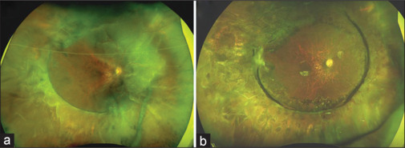
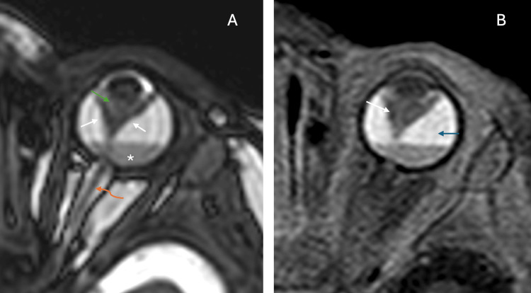
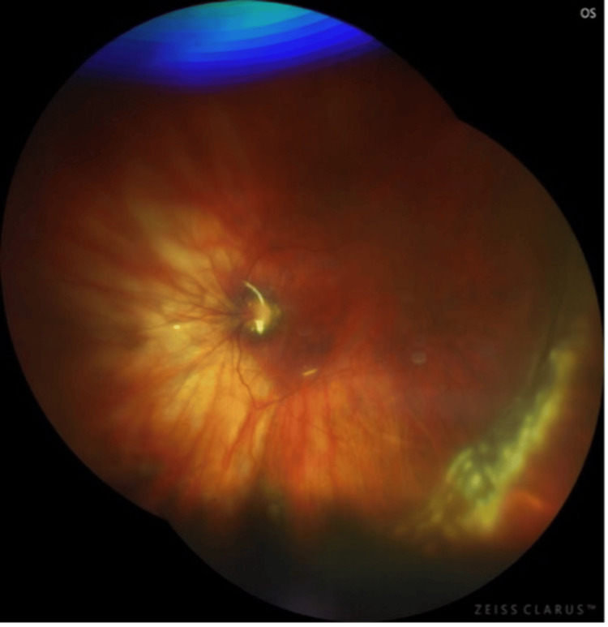

6210 — Bong võng mạc ở trẻ sau mổ đục thể thủy tinh bẩm sinh / Rhegmatogenous retinal detachment after pediatric cataract surgery
Tags: pattern:bong-vong-mac pattern:lo-rach-ngoai-vi pattern:lo-sat-ora pattern:co-keo-pvr pattern:aphakia pattern:gia-the-thuy-tinh pattern:mo-duc-bao-sau pattern:teo-thi vung:vong-mac vung:ora-serrata vung:hoang-diem vung:the-thuy-tinh vung:mat score:nguy-co protocol:UWF protocol:soi-day-mat-an-sclera protocol:sieu-am-B-scan protocol:UBM protocol:OCT protocol:PPV protocol:EUA incidentaloma:khong
Mức chắc chắn (certainty): tổng hợp y văn (literature synthesis) — dựng từ phân tích gộp 9 nghiên cứu/5.922 mắt (Acta Ophthalmol 2025, PMC12531611, CC BY 4.0), đoàn hệ bảo hiểm Mỹ 3.289 trẻ (Ophthalmol Sci 2022, PMC9754963, CC BY-NC-ND), sổ bộ quốc gia Thụy Điển 1.073 mắt (Acta Ophthalmol 2025, PMC12235676, CC BY 4.0), đoàn hệ 132 mắt/84 trẻ (Clin Ophthalmol 2024, PMC11162630, CC BY-NC 3.0), loạt 348 mắt bong võng mạc nhi (Indian J Ophthalmol 2025, PMC12659836, CC BY-NC-SA 4.0), tổng quan phẫu thuật đục thể thủy tinh nhi (Asia Pac J Ophthalmol 2025, PMC12399275, CC BY-NC-ND) và khuyến cáo khám dưới mê (Indian J Ophthalmol 2023, PMC10752321, CC BY-NC-SA). Nhóm không có bệnh nhân của mình; chỗ chưa đủ chắc ghi "chưa rõ". Không ghi tên tác giả — attribution dùng tạp chí + năm + PMCID.
Câu chốt: Bong võng mạc (retinal detachment, RD) sau mổ đục thể thủy tinh bẩm sinh (congenital cataract surgery) là biến chứng hiếm nhưng không bao giờ "hết nguy cơ". Năm con số phải thuộc: (1) nguy cơ gộp 2,4% (0,7–5,0%) trên 5.922 mắt/9 nghiên cứu, theo dõi trung bình 4,0 năm; (2) nguy cơ không cấy IOL sơ phát 6,1% so với có IOL 1,9% — p = 0,267, chưa đủ để thành chỉ định; (3) chậm phát triển trí tuệ 11,0% (6,6–16,4%) — gấp ~5 lần mức chung; (4) thời điểm trung vị 7–9 năm sau mổ (IQR 1–13 năm), một nửa số trẻ còn nguy cơ ở năm thứ 8; (5) bong võng mạc nhi nói chung: 66% đã bong toàn bộ, 75% đã bong hoàng điểm, thành công giải phẫu 88,5% nhưng thành công chức năng chỉ ~50–60%, và PVR D3 chỉ 50%.
1. Tổng quan bệnh học – cơ chế hình ảnh
1.1 TẠI SAO mắt trẻ đã mổ đục thể thủy tinh lại bong võng mạc nhiều năm sau
- Mất "nắp chặn" phía trước và mất ổn định dịch kính: thể thủy tinh dày ~4,5 mm, đường kính 9–10 mm; ở trẻ mổ đục thể thủy tinh bẩm sinh, phẫu thuật thường là lấy thể thủy tinh + mở bao sau + cắt dịch kính trước (anterior vitrectomy). Ba hàng rào cơ học bị mở cùng lúc: bao sau, màng hyaloid trước, và thể tích thể thủy tinh. Dịch kính trở nên di động, hóa lỏng nhanh, và bong dịch kính sau (posterior vitreous detachment, PVD) xảy ra sớm.
- TẠI SAO lỗ rách lại nằm sát ora: chỗ dính chắc nhất giữa dịch kính và võng mạc là đáy dịch kính (vitreous base) — dải 360° bám qua ora serrata, rộng ~2–4 mm phía sau và ~1–2 mm phía trước ora. Khi dịch kính co, toàn bộ lực kéo dồn vào vòng dính này → sinh dialysis (rách dọc ora) hoặc lỗ có nắp sát ora. Đây là lý do hình thái "kinh điển" của bong võng mạc sau mổ đục thể thủy tinh nhi khác bong võng mạc người lớn (lỗ thường ở xích đạo, có nắp rõ).
- TẠI SAO trẻ em lại càng dễ: nhãn cầu sơ sinh có trục (axial length, AL) ~16,5–17 mm, tăng lên ~23 mm ở tuổi 13–15. Vùng ora–đáy dịch kính bị kéo giãn theo sự lớn của nhãn cầu suốt thời thơ ấu; cộng thêm củng mạc–hắc mạc mỏng và võng mạc ngoại vi mỏng, chưa biệt hóa hoàn toàn ở trẻ nhỏ. Đó là lý do nguy cơ không giảm sau vài năm mà kéo dài hàng thập kỷ: trong đoàn hệ 132 mắt, một nửa số trẻ còn nguy cơ ở năm thứ 8 sau mổ.
- TẠI SAO nguy cơ tích lũy theo "số lần can thiệp": mỗi lần mổ nội nhãn (đặt IOL thứ phát, mổ glôcôm, cắt màng đồng tử, YAG) đều tạo phản ứng viêm – phá vỡ hàng rào – thay đổi động học dịch kính. Trong đoàn hệ 132 mắt, glôcôm sau mổ làm tăng nguy cơ HR 49,01 (p < 0,001) và màng viêm OR 6,75 (p = 0,02); ở sổ Thụy Điển, nhóm bong võng mạc có 57,1% bị glôcôm thứ phát (so với 19,5%, p = 0,032) và 42,9% đã mổ glôcôm (so với 13,2%).
- TẠI SAO "không cấy IOL" là tín hiệu chứ chưa phải chỉ định: IOL nằm trong bao/dịch kính tạo vật cản cơ học làm dịch kính ít di động hơn (HR 0,44, 95% CI 0,21–0,91 ở đoàn hệ bảo hiểm Mỹ). Nhưng trong phân tích gộp, khác biệt 6,1% vs 1,9% không có ý nghĩa (p = 0,267) vì chọn lọc: trẻ nhỏ, PFV, nhãn cầu nhỏ thường được để aphakia — chính là nhóm nguy cơ cao. Ghi nhớ: "aphakia là dấu chỉ nguy cơ, không phải nguyên nhân".
- TẠI SAO trẻ không "kêu": (1) nhược thị (amblyopia) — mắt kia bù trừ; (2) trẻ nhỏ không mô tả được "màn che"/nhá đèn; (3) rung giật nhãn cầu (nystagmus) và lác làm mất dấu hiệu định hướng; (4) đục bao sau (posterior capsule opacification, PCO) và màng đồng tử che trục quang, che luôn tầm nhìn ngoại vi khi khám; (5) mắt aphakia công suất cao hoặc IOL đặt sớm làm ảnh hưởng khúc xạ nên "mờ" bị quy cho lệch khúc xạ thay vì bong võng mạc. Vì vậy RD ở trẻ thường đến muộn, bong hoàng điểm, PVR nặng — đúng như loạt 348 mắt: 75% đã bong hoàng điểm, 66% bong toàn bộ.
1.2 TẠI SAO hình ảnh trông như vậy (B-scan – UBM – OCT – MRI)
- Siêu âm B-scan 10 MHz: bước sóng trong mô λ ≈ 1.540 m/s ÷ 10 MHz ≈ 0,15 mm; độ phân giải trục ~0,1 mm, đủ tách võng mạc dày 0,25–0,3 mm khỏi dịch kính. Võng mạc nhiều lớp tế bào đặc + sắc tố trở kháng âm cao → màng tăng âm dày, sáng; dịch dưới võng mạc là nước trong → giảm âm (anechoic).
- Ba quy tắc định danh màng: (1) võng mạc luôn dính vào đĩa thị (cố định ở bờ đĩa) — bong toàn bộ tạo hình "V" hoặc "Y" với đỉnh ở đĩa; (2) màng dịch kính mỏng, tăng âm kém, không dính đĩa, di động mạnh khi đảo mắt; (3) bong hắc mạc vòm dày, không dính đĩa, lan tới thể mi, có thể "hôn nhau" giữa nhãn cầu.
- TẠI SAO Doppler hữu ích: màng dịch kính không có mạch, võng mạc bong còn tuần hoàn; đặt cửa sổ Doppler màu lên màng nghi ngờ thấy dòng chảy trong màng = võng mạc. Đây là mẹo phân biệt PVD không hoàn toàn vs bong võng mạc khi môi trường đục.
- TẠI SAO B-scan không thấy lỗ: độ phân giải ngang ~0,3–0,5 mm và lớp cắt dày; lỗ/dialysis ngoại vi 0,2–0,5 mm gần như vô hình. B-scan chỉ trả lời "có bong không, bong bao nhiêu, có co kéo/PVR không, hướng về đâu" — không thay thế soi đáy mắt 360° có ấn sclera.
- UBM (ultrasound biomicroscopy, 35–50 MHz): độ phân giải ~20–50 µm, xuyên qua mống mắt, thể mi, bờ IOL để thấy ora serrata, dialysis, chu vi thể mi — là cửa sổ duy nhất khi đồng tử nhỏ/dính mống mắt hoặc PCO dày che ngoại vi.
- SS-OCT hoàng điểm: dịch dưới võng mạc giảm phản xạ; võng mạc bong gấp nếp lớp ngoài, dải ellipsoid zone (EZ)/màng giới hạn ngoài (ELM) mất liên tục = tổn thương tế bào cảm quang. Câu hỏi OCT phải trả lời trong mọi ca: macula-on hay macula-off — quyết định mức khẩn và tiên lượng thị lực.
- Ảnh đáy mắt siêu rộng (ultra-widefield, UWF): vùng bong mất ánh hồng cam, bề mặt gấp nếp, bờ bong có đường phân giới với vùng còn dính; UWF cho bản đồ toàn cảnh để chọn đường vào mổ và theo dõi. Ở trẻ nhỏ vẫn phải ấn sclera (thường dưới mê) vì UWF không lấy được ora.
- MRI: trên T2 nặng (như ảnh MRI ở mục 6 – Ca 2), võng mạc bong là dải giảm tín hiệu mảnh hình chữ V, đỉnh hội tụ về đĩa thị; dịch dưới võng mạc giàu protein/máu → T1 tăng tín hiệu, không ngấm thuốc. MRI dùng khi môi trường đục hoàn toàn, nhãn cầu nhỏ, nghi PFV/khối nội nhãn, hoặc cần phân biệt với retinoblastoma — không dùng thay B-scan.
1.3 Ngưỡng định lượng nằm lòng
| Chỉ số | Ngưỡng / giá trị | Nguồn |
|---|---|---|
| Nguy cơ gộp sau mổ đục thể thủy tinh nhi | 2,4% (0,7–5,0), 9 nghiên cứu/5.922 mắt, I² 85,8%, GRADE thấp | PMC12531611 |
| Không cấy IOL sơ phát | 6,1% (0,6–15,9) — 2.572 mắt | PMC12531611 |
| Có IOL sơ phát | 1,9% (0,0–6,7) — 3.517 mắt; p = 0,267 | PMC12531611 |
| Một mắt được mổ / hai mắt | 1,0% (0,3–2,2) / 2,1% (1,0–3,6); p = 0,256 | PMC12531611 |
| Chậm phát triển trí tuệ | 11,0% (6,6–16,4) — 173 mắt; HR 9,59 trong một sổ bộ | PMC12531611 |
| Biến cố bong theo thời gian | trung vị 7 năm (IQR 1–13); một nửa còn nguy cơ ở năm 8 | PMC12531611, PMC11162630 |
| Nguy cơ 5 năm theo bảo hiểm Mỹ | 2,0% (1,3–2,6) — 47/3.289 trẻ | PMC9754963 |
| Sinh non | HR 6,89 (3,26–14,56) | PMC9754963 |
| PFV (persistent fetal vasculature) | HR 8,20 (4,11–16,37); ở sổ Thụy Điển 57,1% ca bong có PFV | PMC9754963, PMC12235676 |
| Cấy IOL (bảo vệ) | HR 0,44 (0,21–0,91) | PMC9754963 |
| Aphakia | 71,4% vs 19,3% ca bong (p = 0,042) | PMC12235676 |
| Glôcôm thứ phát | HR 49,01; 57,1% vs 19,5% (p = 0,032) | PMC11162630, PMC12235676 |
| Trục nhãn cầu | ≤ 23,4 mm: OR 0,55 (giảm nguy cơ); trung vị 23,6 mm ở nhóm bong vs 21,6 mm | PMC11162630 |
| Bong võng mạc nhi: bong toàn bộ / bong hoàng điểm | 66,1% / 75% | PMC12659836 |
| Thành công giải phẫu / chức năng (bong nhi) | 88,5% / ~50–60% | PMC12659836 |
| PVR D3 / D2 / A (thành công giải phẫu) | 50,0% / 66,7% / 73,9% | PMC12659836 |
| Dialysis ora (thành công giải phẫu) | 90,0% (50 mắt) | PMC12659836 |
2. Mẫu hình + chẩn đoán phân biệt theo vị trí (gamut)
- Mẫu hình (pattern): trẻ đã mổ đục thể thủy tinh (aphakia hoặc pseudophakia), nhiều tháng đến nhiều năm sau mổ, không đau, nhìn kém dần hoặc "màn che", có thể kèm lác/rung giật mới; khám thấy võng mạc bong với một hoặc nhiều lỗ/dialysis ở ngoại vi – sát ora, dịch lan về hoàng điểm. Mắt thường có PCO/màng đồng tử, IOL nhỏ/lệch, hoặc bong bao sau — chính là những thứ che lỗ.
- Gamut theo vị trí (location):
- Ora serrata / dialysis 360°: do lực kéo đáy dịch kính + nhãn cầu lớn dần, hay gặp ở trẻ cận thị, chấn thương nhẹ, aphakia; chỉ thấy khi ấn sclera hoặc UBM.
- Ngoại vi sát xích đạo (12h/6h): lỗ có nắp sau PVD; bị bờ IOL/đồng tử nhỏ che.
- Vùng dưới (5h–7h): dịch tích theo trọng lực, khó tamponade, dễ tái bong.
- Cực sau/hoàng điểm: lỗ hoàng điểm trên mắt cận thị nặng hoặc sau cắt dịch kính — thực thể riêng, xử trí PPV + bóc màng + chèn ép, không phải laser ngoại vi.
- Toàn bộ ("V"/"Y" trên B-scan/MRI): thường là bong muộn, đã có PVR; đây là hình thái hay gặp ở trẻ vì phát hiện muộn.
- Gamut theo cơ chế (mechanism): (1) lỗ/dialysis do thay đổi dịch kính sau mổ (phần lớn); (2) co kéo do PFV (HR 8,20) hoặc ROP (HR 6,89) — bong không có lỗ hoặc lỗ + co kéo; (3) chấn thương (dialysis, lỗ hoại tử) — chiếm 44,8% bong võng mạc nhi trong loạt 348 mắt, nên luôn hỏi lại tiền sử chấn thương; (4) di truyền/loạn dưỡng dịch kính (Stickler, Marfan, X-linked retinoschisis) — 16–50% bong nhi có bất thường bẩm sinh kèm theo; (5) sau viêm nội nhãn (lỗ hoại tử) hoặc sau YAG bao sau ở mắt cận thị.
- Bốn câu hỏi phải trả lời trước khi mổ: (1) có lỗ/dialysis không, ở đâu, mấy cái? (2) hoàng điểm còn dính không? (3) có PVR/co kéo không, độ nào? (4) mắt kia thế nào (nguy cơ hai bên 8,6% trong loạt 348 mắt)?
3. Bảng so sánh phân biệt (ma trận đối chiếu)
| Thực thể (entity) | Hình ảnh điển hình | Chốt vào (rule-in) | Chốt loại (rule-out) | Gợi ý xác nhận |
|---|---|---|---|---|
| Bong võng mạc sau mổ đục thể thủy tinh bẩm sinh (PRD nhi) | Màng tăng âm dày, dính đĩa thị, di động; lỗ/dialysis sát ora; có aphakia/IOL + PCO; nhiều năm sau mổ | Màng dính đĩa thị + lỗ thấy khi soi 360° ấn sclera/UBM + tiền sử mổ TTT | Không có lỗ + màng dày cứng hình phễu + PFV/ROP → nghĩ bong co kéo | UWF + ấn sclera (EUA), B-scan Doppler, UBM, SS-OCT |
| Bong co kéo (TRD) do PFV/ROP/PVR | Màng dày, cứng, hình phễu kín, dính từng điểm, không di động; có dây xơ từ đĩa tới bao sau (PFV) | Phễu kín + màng xơ + không di động + PFV/ROP/PVR | Bong bóng nước, di động, dính đĩa → RRD | B-scan động, MRI (dây xơ), OCT |
| Bong thanh dịch (exudative) | Dịch lan rộng, không lỗ, không theo trọng lực; có khối/viêm bên dưới (Coats, PHPV, u, VKH) | Không lỗ + khối hắc mạc/viêm + dịch đổi theo bệnh nền | Có lỗ + bờ bong theo trọng lực → RRD | B-scan, OCT, FAF, MRI; không laser/mổ vội |
| Bong hắc mạc (choroidal detachment) | Vòm dày, trơn, KHÔNG dính đĩa, lan tới thể mi; có thể "kissing"; nhãn áp thấp | Không dính đĩa + hình vòm + hạ nhãn áp + sau mổ | Dính đĩa thị + gấp nếp → võng mạc | B-scan (bờ sau), nhãn áp |
| Tách lớp võng mạc (retinoschisis) | Vòm mỏng, nhẵn, không di động, thường thái dương dưới; không lỗ; có thể có lõi nan hoa (X-linked) | Vòm mỏng + bờ nhẵn + không lỗ + thị trường tương ứng | Có lỗ + dịch lan tới hoàng điểm → RRD | OCT (tách trong võng mạc), B-scan |
| Bong sau viêm nội nhãn | Màng dính đĩa + aftermovement; lỗ hoại tử đúng ổ chorioretinitis cũ, bong trong ngày | Tiền sử viêm nội nhãn + lỗ ở ổ viêm + bong nhanh | Bong muộn nhiều năm, lỗ ngoại vi → PRD | Soi đáy mắt, B-scan, hồ sơ mổ |
| Chấn thương (dialysis/lỗ hoại tử) | Dialysis rộng, có thể 360°; kèm lún xương, rách mống mắt, đục thể thủy tinh | Tiền sử chấn thương + dialysis + tổn thương phối hợp | Không chấn thương, dialysis nhỏ sau mổ → PRD | CT hốc mắt (khuyết xương), soi 360°, UBM |
| Bong võng mạc do lỗ hoàng điểm (MHRD) | Lỗ toàn bộ hoàng điểm, SRF khu trú trong lõm hắc mạc; AL > 26,5 mm | Lỗ hoàng điểm + cận thị nặng + SRF khu trú | Lỗ ngoại vi + dịch lan rộng → PRD | SS-OCT, AL, B-scan |
| "Bong giả" do mặt khí–dịch (nếu mắt còn khí/dầu) | Đường tăng âm phẳng, đổi theo tư thế, không gấp nếp, không dính đĩa | Tiền sử bơm khí/dầu + đường phẳng + đổi tư thế | Màng dính đĩa + gấp nếp → võng mạc | B-scan 2 tư thế, OCT qua khí/dầu |

(a) Trẻ 12 tuổi, mắt phải: bong võng mạc tồn tại sau mổ đai củng mạc (post-buckle persistent RD) — võng mạc gấp nếp, màu xanh nhạt, bờ phân giới rõ; (b) võng mạc áp sau cắt dịch kính + dầu silicone — thấy rõ vòng phản quang của đai và võng mạc phẳng. Đây là bong võng mạc nhi (không phải ca sau mổ đục thể thủy tinh) — dùng để minh họa hình thái và kết cục điều trị, đã ghi rõ trong chú thích để không gán sai bệnh nhân. Nguồn: Indian J Ophthalmol 2025 (PMC12659836), CC BY-NC-SA 4.0, nguyên bản.Dấu hiệu "lỗ giấu mặt" ở mắt trẻ đã mổ đục thể thủy tinh
- Dialysis sát ora bị PCO che: PCO dày + dính mống mắt sau (posterior synechiae) làm không thấy 2–4 mm ngoại vi — nơi hay có lỗ nhất. Không được kết luận "không có lỗ" khi chưa soi 360° có ấn sclera (thường phải khám dưới mê, EUA) và chưa UBM.
- Lỗ "vô hình" trên siêu âm: lỗ 0,2–0,5 mm dưới độ phân giải ngang của B-scan; chỉ hướng bong gợi ý (dịch nhiều ở góc phần tư nào thì lỗ thường ở đó).
- Bong hoàng điểm "im lặng": 75% bong võng mạc nhi đã bong hoàng điểm lúc chẩn đoán — trẻ không kêu vì nhược thị và vì bong tiến triển chậm.
- Mắt kia: 8,6% bong hai bên trong loạt 348 mắt; ở trẻ có bệnh nền (Stickler, PFV, sinh non) tỉ lệ cao hơn — luôn khám mắt còn lại trong cùng lần.
4. Protocol + hệ phân độ/điểm chuẩn hóa
4.1 Quy trình hình ảnh khi trẻ đã mổ đục thể thủy tinh có dấu hiệu bất thường
- Đo thị lực theo tuổi (Teller/Snellen, ưu tiên mắt từng bên) + khúc xạ + nhãn áp — nhưng thị lực kém không định lượng được nguyên nhân: luôn soi đáy mắt.
- Soi đáy mắt 360° có ấn sclera (đèn khe + lens 20 D/28 D); trẻ không hợp tác → khám dưới mê (examination under anesthesia, EUA) — chỉ định chuẩn gồm theo dõi sau mổ nội nhãn ở trẻ và trẻ aphakia nhỏ tuổi.
- UWF (ultra-widefield) ảnh màu ± autofluorescence — bản đồ bong, bờ phân giới, so sánh các lần.
- B-scan 10 MHz ± Doppler — khi PCO dày, xuất huyết dịch kính, đồng tử nhỏ, hoặc mắt không soi được: trả lời có bong? bong bao nhiêu? PVR?.
- UBM 35–50 MHz — nghi dialysis sát ora, dính mống mắt, bờ IOL che lỗ.
- SS-OCT hoàng điểm — macula-on/off, chiều cao dịch dưới võng mạc (µm), tổn thương lớp ngoài.
- MRI hốc mắt (T2 nặng + T1 sau tiêm) — khi môi trường đục hoàn toàn/nhãn cầu nhỏ/nghi PFV/khối, hoặc cần loại trừ retinoblastoma trước mổ (xem ảnh MRI ở mục 6 – Ca 2).
- Chụp lại 2–4 tuần nếu chưa thấy lỗ mà bong khu trú, chưa đe dọa hoàng điểm — bong có thể tiến triển rất chậm ở trẻ.
4.2 Ngưỡng thời gian và lựa chọn phẫu thuật
- Macula-on = mổ sớm (trong 24–72 giờ) — bằng chứng mạnh ở người lớn; ở trẻ, mổ ngay khi huy động được ekip vì gây mê và bong tiến triển nhanh khi đã có PVR.
- Macula-off vẫn là cấp cứu: không chờ "trẻ còn nhỏ"; trong loạt 348 mắt, bong toàn bộ thành công giải phẫu 83,9% so với bong bán phần 96,6% (p = 0,0023).
- Chọn phẫu thuật theo hình thái (loạt 348 mắt): đai + PPV thành công sơ phát 66,0%, PPV đơn thuần 63,1%, đai đơn thuần 59,4%. Ở trẻ, PPV cho phép giải phóng co kéo, tìm lỗ sát ora, lấy dịch kính đục; đai giữ vai trò khi dialysis lớn/360°, lỗ dưới, PVR nhẹ.
- Tamponade: SF6 cho lỗ trên nhỏ; C3F8 khi lỗ dưới hoặc cần chèn ép lâu; dầu silicone khi PVR nặng, bong tái phát, bong toàn bộ có phễu. Trẻ không nằm yên theo tư thế — đây là lý do thực dụng để chọn tamponade dài ở ca phức tạp.
- PVR là yếu tố tiên lượng mạnh nhất trong loạt này: thành công giải phẫu D3 50,0%, D2 66,7%, C3 73,7%, A 73,9% — mổ muộn = PVR = mất mắt.
- Bong sau YAG bao sau: báo cáo ca cho thấy bong 6 ngày sau YAG ở mắt cận thị cao + đục thể thủy tinh bẩm sinh (ảnh 3) — cần khám đáy mắt sau YAG, đặc biệt năm đầu và ở mắt cận thị/PCR cũ.
- Dự phòng: không có RCT cho laser/cryo 360° dự phòng sau mổ đục thể thủy tinh nhi → không làm thường quy. Dự phòng chỉ đặt ra ở nhóm có bệnh lý dịch kính–võng mạc nền (Stickler, Marfan, X-linked retinoschisis) — nơi cryo/laser dự phòng đã được dùng và nguy cơ bong trọn đời 40–80% (Stickler).
flowchart TD
A[Trẻ đã mổ đục thể thủy tinh, nhìn kém hoặc màn che] --> B[Đo thị lực theo tuổi + nhãn áp]
B --> C{Soi được 360 độ có ấn sclera?}
C -->|Không: PCO dày, dính mống mắt, không hợp tác| D[EUA + soi 360 độ + UBM]
C -->|Có| E[UWF + SS-OCT hoàng điểm]
D --> E
E --> F{B-scan thấy màng dính đĩa thị?}
F -->|Không rõ hoặc môi trường đục| G[B-scan 10 MHz + Doppler; MRI T2 nếu nhãn cầu nhỏ/PFV]
F -->|Có| H{Bong hoàng điểm?}
G --> H
H -->|Macula on| I[Mổ trong 24 đến 72 giờ]
H -->|Macula off| J[Mổ sớm nhất có thể, không chờ]
I --> K{PVR nặng hoặc bong toàn bộ?}
J --> K
K -->|Không| L[PPV + laser/cryo, tamponade SF6 hoặc C3F8]
K -->|Có| M[PPV + bóc màng + dầu silicone, cân nhắc đai]
L --> N[Theo dõi đáy mắt 360 độ định kỳ suốt đời, khám mắt kia]
M --> N
4.3 Lịch theo dõi sau mổ đục thể thủy tinh nhi (thực dụng, chưa có chuẩn hóa)
- Y văn chưa có lịch chuẩn hoá (không RCT): nguy cơ kéo dài ≥ 8 năm, trung vị 7–9 năm → theo dõi dài hạn, không "xuất viện" ở tuổi đi học.
- Đề xuất thực dụng dựa trên dữ liệu trên: khám 1 tuần – 1 tháng – 3 tháng – 6 tháng trong năm đầu; sau đó mỗi 6–12 tháng tới hết tuổi thiếu niên, kèm soi đáy mắt 360° mỗi lần; EUA khi không soi được ngoại vi; dặn gia đình: nhá đèn/ruồi bay/màn che/lác mới = cấp cứu, kể cả nhiều năm sau mổ.
- Nhóm cần theo dõi dày hơn: aphakia, PFV, sinh non/ROP, cận thị/AL > 23,4 mm, glôcôm thứ phát hoặc đã mổ glôcôm, chậm phát triển trí tuệ (11,0%), mắt kia đã bong.
5. Biến thể bình thường và cạm bẫy
- "PCO che lỗ" — cạm bẫy số 1: PCO dày + dính mống mắt làm mờ 2–4 mm ngoại vi; không kết luận "không có lỗ" khi chưa soi 360° ấn sclera, chưa UBM, chưa B-scan. Nếu vẫn không thấy lỗ mà võng mạc bong → mổ thăm dò + soi nội nhãn toàn bộ.
- "Trẻ không kêu" không phải "trẻ không bong": trẻ aphakia/IOL sớm thường nhược thị nặng, mắt kia bù trừ; thay đổi hành vi (dụi mắt, không theo đồ vật, lác mới) là dấu hiệu thay thị lực.
- Mọi "mờ" sau mổ không phải PCO: PCO, lệch/ra trước IOL, phù hoàng điểm, bong võng mạc, teo thị đều gây mờ. Không YAG khi chưa soi đáy mắt: YAG trên mắt đang bong làm bong nặng thêm và không cải thiện thị lực.
- Bong sau YAG: ở mắt cận thị cao, PCR cũ, YAG trong năm đầu — khám đáy mắt sau laser; bong có thể xuất hiện vài ngày đến vài tuần (ca minh họa: 6 ngày).
- Đừng gán mọi bong nhi cho "mổ đục thể thủy tinh": chấn thương 44,8%, cận thị 17%, coloboma 10,6% trong loạt 348 mắt; 16–50% bong nhi có bất thường bẩm sinh kèm theo. Luôn hỏi tiền sử chấn thương, khám mắt kia, tìm dấu hiệu Stickler/Marfan/PFV.
- Bong co kéo ≠ bong có lỗ: ở PFV/ROP, "bong" thường không có lỗ; laser/mổ như RRD sẽ thất bại — cần B-scan động + MRI để thấy dây xơ/PFV (ảnh MRI ở mục 6 – Ca 2).
- MRI "V-shape" không đồng nghĩa RRD: hình chữ V cũng gặp trong bong co kéo do PFV và bong thanh dịch; dấu chốt là có lỗ hay không, và lỗ chỉ thấy khi soi 360°/UBM.
- Bong hắc mạc sau mổ: hạ nhãn áp + vòm không dính đĩa — không mổ như bong võng mạc; xử trí hạ nhãn áp/viêm trước.
- Bong dưới dầu silicone: khó thấy vì dầu trong suốt + phản xạ; dùng OCT qua dầu và soi ấn sclera, đừng tin "đáy mắt bình thường" trên UWF.
- Mắt còn khí/dầu: mặt khí–dịch tạo đường tăng âm phẳng đổi theo tư thế — dễ đọc thành "bong"; chụp 2 tư thế và tìm gấp nếp/dính đĩa.
6. Tự lượng giá — Blind Quiz
Ca 1 — Trẻ 12 tuổi, đã mổ bong võng mạc bằng đai củng mạc 3 tháng trước, nay vẫn "không thấy rõ".
- Gợi ý: ảnh (a) và (b) là cùng một mắt, hai thời điểm; (b) có vòng phản quang của vật liệu đai.
- Câu hỏi: mô tả (a)? Vì sao đai đơn thuần thất bại ở ca này? (b) đã làm gì?
Bấm để hiện đáp án (findings + chẩn đoán)
- Dấu hiệu (a): võng mạc bong, gấp nếp, màu xanh lục nhạt, bờ phân giới với vùng còn dính — bong tồn tại sau đai (persistent RD); đai không bịt được lỗ/không giải phóng được co kéo.
- Chẩn đoán: bong võng mạc có lỗ rách tồn tại sau mổ đai ở trẻ.
- Vì sao đai thất bại: đai chỉ ép thành nhãn cầu, không giải phóng co kéo đáy dịch kính; ở trẻ, dialysis sát ora và PVR cần cắt dịch kính + bóc màng + tamponade.
- (b): PPV + dầu silicone → võng mạc áp hoàn toàn, vẫn thấy vòng đai phía ngoài.
- Bài học: ở trẻ, đai đơn thuần có tỉ lệ thành công sơ phát thấp nhất (59,4% trong loạt 348 mắt); PPV ± đai là hướng chính.
- Nguồn ảnh: Indian J Ophthalmol 2025 (PMC12659836), CC BY-NC-SA 4.0.
Ca 2 — Bé 1 tháng tuổi, nhãn cầu trái nhỏ, đồng tử trắng, không thấy đáy mắt.

- Câu hỏi: cấu trúc hình chữ V trong dịch kính là gì? Vì sao không được vội kết luận retinoblastoma? Cần thêm gì trước mổ?
Bấm để hiện đáp án (findings + chẩn đoán)
- Dấu hiệu: T2 nặng — nhãn cầu trái nhỏ (microphthalmos), dải giảm tín hiệu hình chữ V (mũi tên trắng) đỉnh hội tụ về đĩa thị = võng mạc bong toàn bộ; cấu trúc giảm tín hiệu từ mặt sau thể thủy tinh tới đĩa thị (PFV/dây hyaloid tồn tại); dịch dưới võng mạc T1 tăng tín hiệu (dịch giàu protein/máu).
- Chẩn đoán: PFV (persistent fetal vasculature) với bong võng mạc toàn bộ — bong co kéo/thanh dịch, không phải bong có lỗ.
- Vì sao không vội kết luận RB: RB có khối đặc + vôi hóa thô (CT nhạy hơn), không có dây xơ từ đĩa tới bao sau; ca này không vôi hóa, có dây xơ + nhãn cầu nhỏ.
- Trước mổ: B-scan 10 MHz (đánh giá dịch kính, dây xơ), CT nếu cần loại trừ vôi hóa, đo AL (chọn kỹ thuật), tư vấn tiên lượng thị lực kém (nhãn cầu nhỏ + bong toàn bộ).
- Nguồn ảnh: Cureus 2025 (PMC12687664), CC BY 4.0.
Ca 3 — Nữ 27 tuổi, đục thể thủy tinh bẩm sinh hai bên, cận thị cao, phaco + IOL; 4 tháng sau YAG bao sau; 6 ngày sau YAG thấy "màn che" một mắt.

- Câu hỏi: mô tả tổn thương? Nghi ngờ gì sau YAG? Xử trí?
Bấm để hiện đáp án (findings + chẩn đoán)
- Dấu hiệu: vùng võng mạc bong bóng nước, gấp nếp, màu xanh lục nhạt, bờ phân giới rõ với võng mạc còn dính; đĩa thị nằm trong vùng võng mạc còn dính; mắt giả thể thủy tinh.
- Chẩn đoán: bong võng mạc có lỗ rách sau YAG bao sau ở mắt cận thị cao + đục thể thủy tinh bẩm sinh.
- Vì sao YAG là nghi phạm: sóng xung kích làm đứt màng hyaloid trước, kéo PVD đột ngột; nguy cơ tăng ở cận thị cao, PCR cũ, YAG trong năm đầu.
- Xử trí: PPV + laser/cryo + tamponade ngay; khám đáy mắt 360° trước và sau YAG ở mọi mắt nguy cơ.
- Nguồn ảnh: Cureus 2025 (PMC12481467), CC BY 4.0 — bệnh nhân người lớn có đục thể thủy tinh bẩm sinh, không phải trẻ nhỏ; dùng để minh họa cơ chế sau YAG.
Bài liên quan chéo
- 400 – Tổng quan Mắt & thị giác
- 1487 – Bong võng mạc ở mắt giả thể thủy tinh sau phaco
- 1481 – Lỗ rách võng mạc cấp chưa bong: laser dự phòng hay theo dõi
- 1480 – Đục thể thủy tinh sau bóc màng trước võng mạc (ERM)
- 1643 – Glôcôm sau mổ đục thể thủy tinh bẩm sinh
- 413 – PFV/PHPV: dây xơ thể thủy tinh
- 445 – Bong võng mạc
- 457 – Bệnh "giả ROP" ở trẻ đủ tháng
Ảnh
- Tên file theo quy ước
6210_..._Modality_SourceID.jpg; nguồn + giấy phép từng ảnh ởimages/CREDITS.md. - Cả 3 ảnh là ảnh minh họa hình thái/tình huống, không phải ca "bong võng mạc sau mổ đục thể thủy tinh ở trẻ nhỏ": ảnh (a)/(b) là bong võng mạc nhi sau đai, ảnh MRI là PFV + bong toàn bộ ở sơ sinh, ảnh fundus là người lớn có đục thể thủy tinh bẩm sinh bong sau YAG — đã ghi rõ trong từng chú thích.
- Không crop/ghép ảnh CC BY-NC-SA; ảnh CC BY giữ nguyên khung và nhãn của tác giả.
Không dùng để chẩn đoán độc lập khi chưa có người hướng dẫn.